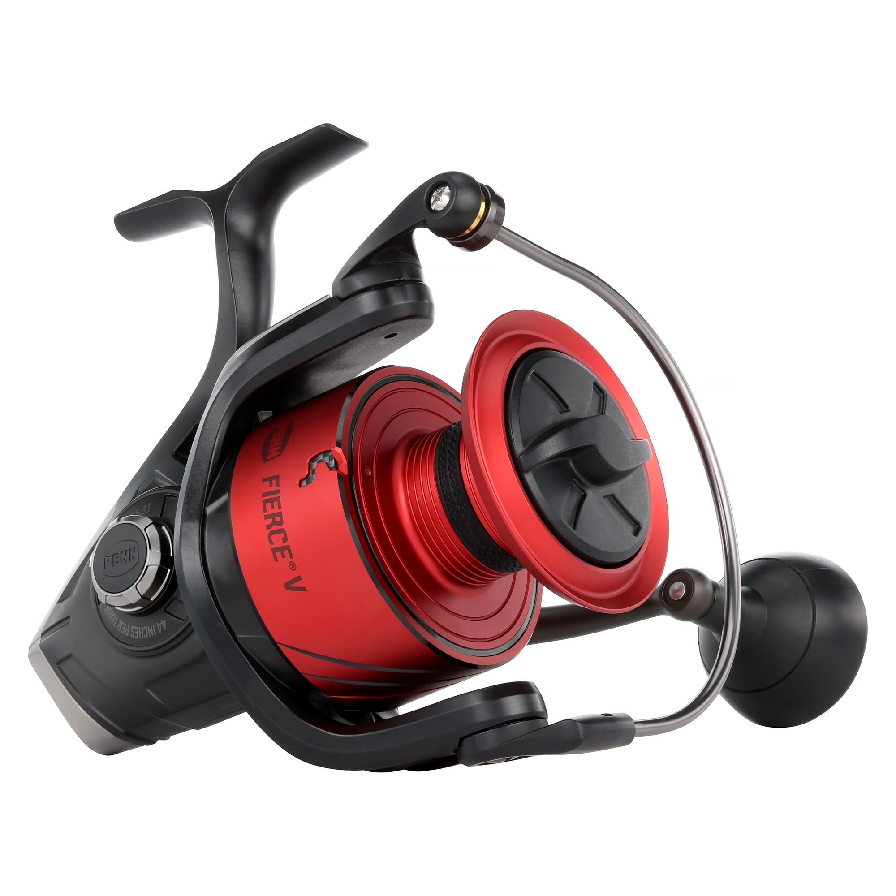

ReelCalc Reel Setup Guide
PENN Fierce V 8000 Line Capacity & Reel Setup Guide
If your surf setup calls for heavier line and plenty in reserve, the Fierce V 8000 has a published 25 lb / 310-yard mono rating. Its 5.3:1 gearing is slower than the 5000 and 6000, while the larger spool still retrieves a listed 44 inches per turn at the rated fill level. PENN fits HT-100 carbon fiber drag washers. The calculator below is set to this exact reel, with both full-spool and optional-backing setups available.